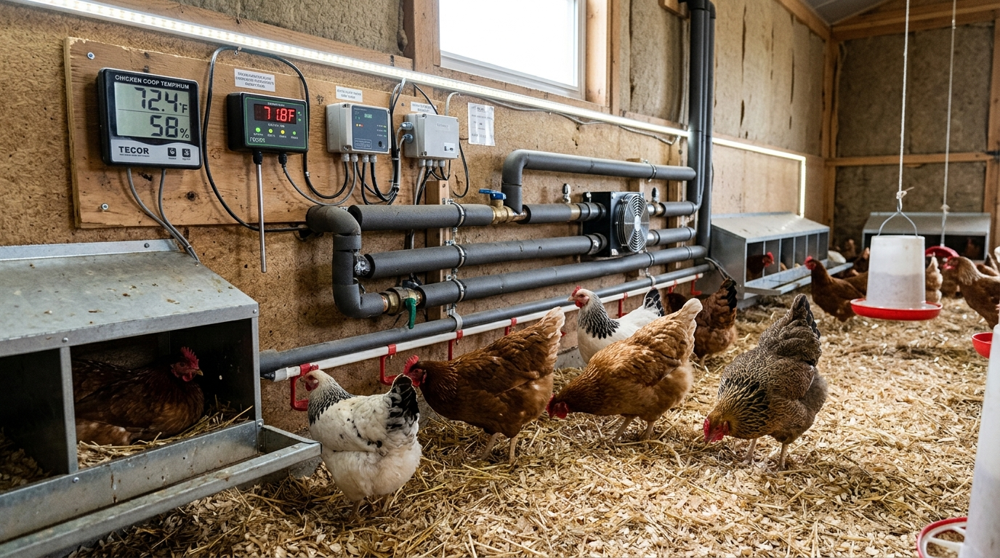
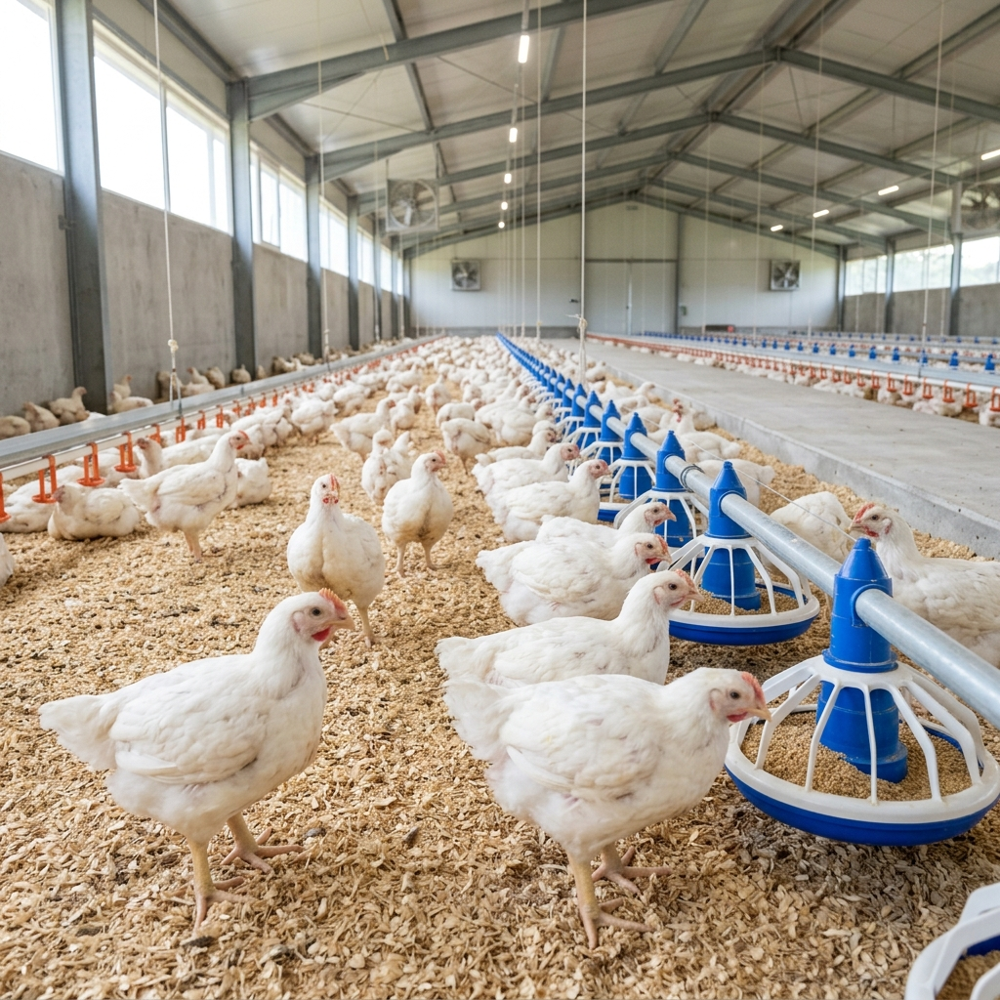
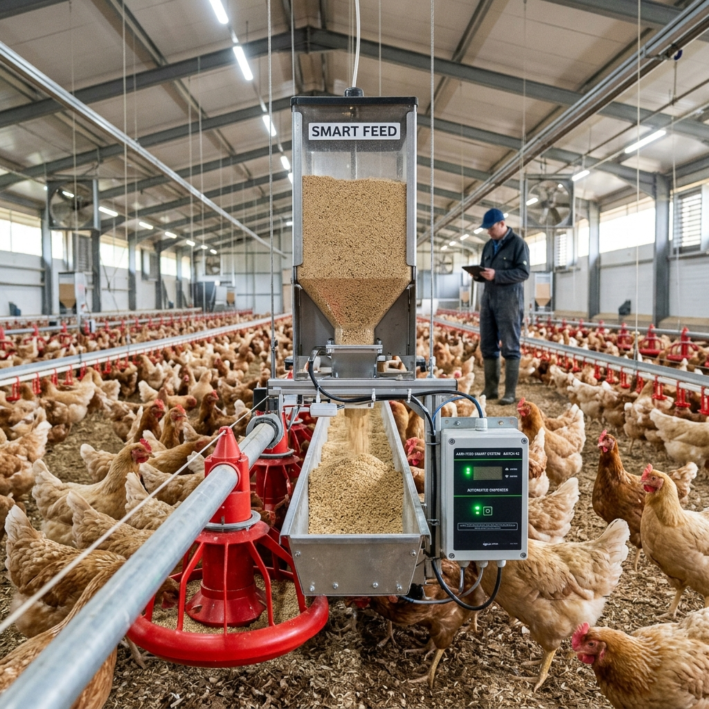

Inovasi teknologi untuk hasil peternakan yang maksimal, sehat, dan efisien.
AyamIoT Farm adalah peternakan ayam modern yang mengintegrasikan teknologi Internet of Things (IoT) ke dalam setiap aspek pemeliharaan. Kami berkomitmen untuk menghasilkan produk unggas berkualitas tinggi melalui pemantauan dan pengelolaan kandang otomatis.
Menjadi pelopor peternakan ayam cerdas yang berkelanjutan dan efisien di Indonesia.
Meningkatkan kesejahteraan hewan, efisiensi operasional, dan kualitas produk melalui teknologi.

Perawatan ayam broiler dan layer dengan standar kesehatan dan kebersihan tertinggi berbasis data.
Layanan konsultasi ahli untuk transformasi peternakan tradisional menjadi peternakan pintar berbasis IoT.
Instalasi sistem IoT untuk pemantauan suhu, kelembapan, dan kondisi lingkungan kandang Anda.
Manajemen kesehatan unggas dengan analisis data lingkungan untuk mencegah penyakit sejak dini.

Ayam broiler berkualitas, sehat, dan bebas residu antibiotik berlebih.
Ayam petelur produktif hasil seleksi genetik dan pemeliharaan optimal.

Telur segar kaya nutrisi dari ayam yang dipelihara di kandang modern.
Pakan bernutrisi seimbang untuk mendukung pertumbuhan ayam yang sehat.
Pemantauan Lingkungan Kandang Real-time (Simulasi Offline)
Silakan hubungi kami untuk informasi lebih lanjut mengenai layanan dan produk kami.
Bapak H. Miftahul Hadi
Jl. Kandung, Desa Tanen, Kec. Rejotangan, Kab. Tulungagung.
+62 812 3456 7890
halo@ayamiot.local